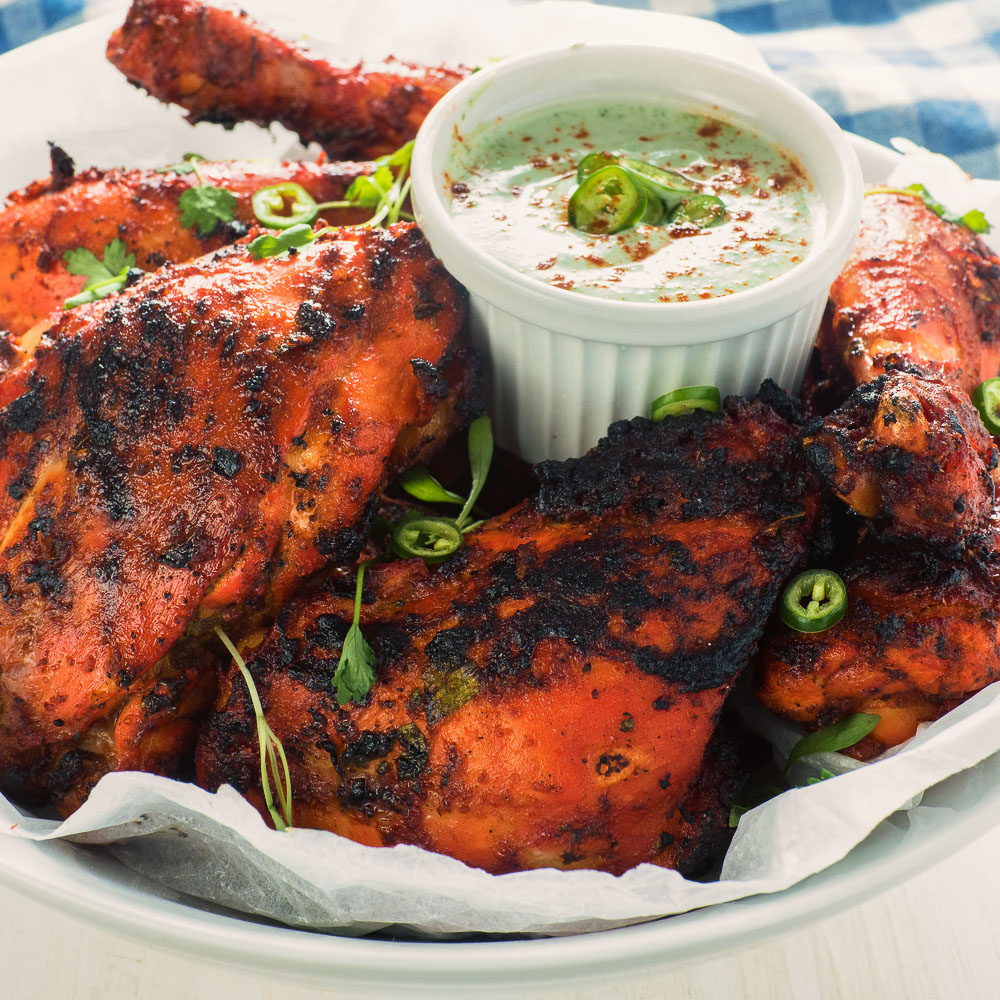

Tandoori Chicken
Ingredients
- 1 whole chicken, cut in 10-12 pieces
- 200 gms Dahi/Curd
- 1 tbsp Butter
- 1 tsp turmeric powder
- 2 tbsp red chilli powder
- Salt to taste
- 2 tbsp oil
- 1 piece of charcoal
- ginger garlic paste
- Garnish
- Coriander leaves
- onions slices,
- lemons halves
Method:
- Make some deep cuts into the chicken pieces
- For marination add yogurt, red chilli powder, ginger garlic paste and salt to taste.
- Keep aside the marinated chicken for 30 minutes
- In a pan add some oil and salted butter, place the chicken pieces in the pan
- Cook each sides properly until you get nice golden brown colour, cook for 10-12 minutes
- Heat the charcoal until its red in colour
- In the bowl where the tandoori chicken is placed, keep a small steel glass
- and place the coal in it and add some oil and cover the lid.
- Garnish it with coriander leaves, onion and lemon
- Tandoori Chicken is ready to be served!